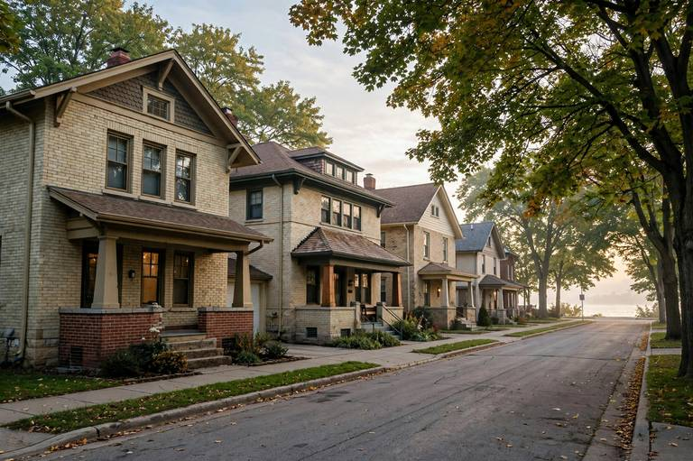

Rodent Control · Darien, WI
Licensed Rodent Control in Darien, WI
If rodents have moved into your Darien home or business, Murvo can help today. Our local, licensed crews provide same-day inspection, targeted removal, durable exclusion, and cleanup, all under one flat-rate written quote with a written guarantee. No hourly billing and no surprise add-ons, just rodent specialists serving Darien and communities throughout Walworth County every day of the week. Crews route daily across Walworth County - 1 ZIP codes covered, including 53114.
24/7Availability
1ZIP codes covered
Same-dayResponse
Licensed · Upfront options · Written guarantees · Fully insured
Darien at a glance
Local Rodent Control for Darien, WI.
Walworth County
Countysoutheast Wisconsin
RegionKenosha · 43 mi
Nearest metro48 miles southeast of Madison
From Madison1
ZIP codes covered Service by service in Darien
Rodent Control Services Available in Darien
Rodent-only specialists serving Darien and Walworth County. Every service below is explained in local terms - the species involved, the entry points that matter in vintage duplexes and stone homes, brick bungalows, older single-family homes, and farm and rural properties, and the seasonal timing that decides whether a fix lasts.
- 01Rodent Control↗
- 02Rodent Inspection↗
- 03Rodent Removal↗
- 04Rodent Exclusion↗
- 05Rodent Proofing↗
- 06Rat Control↗
- 07Mice Control↗
- 08Mouse Removal↗
- 09Rat Removal↗
- 10Rodent Trapping↗
- 11Rodent Baiting↗
- 12Rodenticide Application↗
- 13Attic Rodent Removal↗
- 14Crawl Space Rodent Removal↗
- 15Wall Rodent Removal↗
- 16Kitchen Rodent Control↗
- 17Garage Rodent Control↗
- 18Commercial Rodent Control↗
- 19Residential Rodent Control↗
- 20Emergency Rodent Removal↗
- 21Same-Day Rodent Control↗
- 22Rodent Damage Repair↗
- 23Rodent Waste Cleanup↗
- 24Rodent Disinfection↗
- 25Rodent Odor Removal↗
- 26Dead Rodent Removal↗
- 27Rodent Dropping Cleanup↗
- 28Rodent Exclusion for Roofs↗
- 29Rodent Exclusion for Vents↗
- 30Rodent Exclusion for Chimneys↗
Rodent Control in Darien
Rodent Control in Darien
A single mouse sighting in a Darien kitchen rarely means a single mouse. Rodents breed fast, contaminate food areas, and gnaw wiring long before the damage is obvious. Murvo responds with same-day appointments where available, a background-checked local crew, and a coordinated program of trapping, exclusion, cleanup guidance, and monitoring that keeps working after the first visit ends.
When you need rodent control in Darien, the job starts with what is actually happening in your part of Walworth County. Murvo crews work Darien every week, so they know how Norway rat (Rattus norvegicus) and House mouse (Mus musculus) behave around vintage duplexes and stone homes, brick bungalows, older single-family homes, and farm and rural properties here - and where they get in: basement foundations, alley-facing garage doors, sewer laterals, and gaps around utility lines and sills. We arrive equipped for the full job, confirm the flat rate in writing before work begins, and cover the whole Darien area, including Allens Grove, Delavan. No call-center runaround and no open-ended hourly billing - just a local crew, a clear plan, and a written quote you approve first. Around Lake Lorraine, Allens Grove, Delavan, the pattern is similar: House mouse (Mus musculus) finds basement foundations, alley-facing garage doors, sewer laterals, and gaps around utility lines and sills first, and lasting rodent control has to close those routes.
We start by identifying whether Norway rat (Rattus norvegicus), House mouse (Mus musculus), or both are active, because each species nests, feeds, and travels differently. Nothing is sealed while animals remain inside. Traps are placed on proven runways along walls, beams, and pipe runs, checked on schedule, and adjusted as catches change. Once numbers fall, exclusion sealing closes the route back in, droppings and nesting debris are removed hygienically, and follow-up monitoring checks the attic, crawl space, and kitchen until readings stay clear. That order protects your home.
Booking takes one call, and same-day appointments are available in most Darien areas. Your technician inspects first, talks you through the plan in plain language, and only starts once you approve the written quote. Work is carried out in stages, with trap checks and sealing visits booked ahead. At the final visit we walk the finished work together and confirm monitoring is clear. Questions are answered at every stage, day or night.
Need help quickly in Darien? Call any time — the emergency line is staffed 24/7, and same-day rodent control appointments are available in most areas. We inspect first, explain the plan in plain language, and put the flat rate in writing before work starts. The written quote for your Darien property will spell out exactly which of these applies before any work starts.
Murvo does not quote rodent control sight unseen, because species, activity, and sealing needs change the work involved. After inspection you get one flat-rate written quote, and that is the figure you pay. As national context only, Angi's 2026 figures put rat and mouse removal and control at an average of $396, with a typical range of $189 to $655 — a benchmark, not a Murvo price.
Rodent Inspection in Darien
Rodent Inspection in Darien
Most Darien inspections start with uncertainty: a noise, a smell, a few droppings that might be old. Murvo turns that uncertainty into a written record. A rodent inspection checks attic, crawl space, roofline, and foundation, photographs the evidence, and ends with a flat-rate written quote for anything worth fixing.
In Darien, rodent inspection is not a generic spray-and-go service. Rodents exploit basement foundations, alley-facing garage doors, sewer laterals, and gaps around utility lines and sills in vintage duplexes and stone homes, brick bungalows, older single-family homes, and farm and rural properties, and a fix that ignores those routes does not last. Murvo's Darien team inspects first, shows you the evidence - droppings, gnaw marks, entry gaps - and then lays out the work with a flat-rate written quote. We serve all of Walworth County from Darien, including Allens Grove, Delavan, and every job is covered by our written workmanship guarantee. Seasonal timing matters for rodent inspection in Darien: rodents surge in Darien from October through April.
Timing often tells the story first. Noises at dusk suggest one pattern; droppings near stored food suggest another. Technicians use what you report to focus the search, then verify it against physical evidence throughout vintage duplexes and stone homes, brick bungalows, older single-family homes, and farm and rural properties. They check wiring and insulation for damage, test whether gaps at basement foundations, alley-facing garage doors, sewer laterals, and gaps around utility lines and sills are active, and mark each opening by size and species. The written report that follows ranks repairs clearly, so decisions rest on findings rather than guesswork or pressure. Each recommendation in that report traces back to a photographed finding, keeping the whole assessment accountable.
Booking a rodent inspection in Darien takes one call, and same-day appointments are often available. Your technician arrives on time, walks the property with you, and inspects the attic, crawl space, and exterior in one visit. Findings are explained with photos before you receive a flat-rate written quote for any recommended work. Nothing proceeds without your approval, and urgent items are clearly flagged. You keep the full written report either way.
Inspections are the fastest way we help in Darien: same-day appointments are available in most areas, and urgent calls are answered 24/7. A typical rodent inspection takes under an hour for most homes, and you leave the visit with photos, written findings, and a flat-rate quote for any work we recommend, so decisions never wait on us. In Walworth County, activity follows the local season, so timing the work matters as much as the method.
Your exact rodent inspection price is confirmed before we visit, and any follow-up work is quoted as a flat rate in writing after the inspection — no hourly billing. For context, Angi's 2026 data puts a professional rodent inspection nationally at $100 to $200, often credited toward the job if you proceed.
Rodent Removal in Darien
Rodent Removal in Darien
In vintage duplexes and stone homes, brick bungalows, older single-family homes, and farm and rural properties, removal fails when it ignores how rodents actually live: close to food, water, and undisturbed cover near basement foundations, alley-facing garage doors, sewer laterals, and gaps around utility lines and sills. Our rodent removal in Walworth County starts by mapping that daily pattern, then removes animals room by room, including attics and garages, until monitoring, not optimism, says the home is clear.
When you need rodent removal in Darien, the job starts with what is actually happening in your part of Walworth County. Murvo crews work Darien every week, so they know how Norway rat (Rattus norvegicus) and House mouse (Mus musculus) behave around vintage duplexes and stone homes, brick bungalows, older single-family homes, and farm and rural properties here - and where they get in: basement foundations, alley-facing garage doors, sewer laterals, and gaps around utility lines and sills. We arrive equipped for the full job, confirm the flat rate in writing before work begins, and cover the whole Darien area, including Allens Grove, Delavan. No call-center runaround and no open-ended hourly billing - just a local crew, a clear plan, and a written quote you approve first. The Darien crews who handle rodent removal also handle the follow-through - proofing, cleanup, and monitoring - so one visit can close the whole problem.
Removal starts with an assessment of species, numbers, and access routes across attics, wall voids, garages, and kitchens. Once you approve the written quote, technicians set traps along proven runways, check them on schedule, and remove animals promptly and hygienically. Catch records show progress clearly instead of relying on guesswork. Removal is followed immediately by entry-point exclusion, because new rodents will replace removed ones through any gap left open, and disinfection is arranged after heavy activity. Photos document each stage for you.
Call, describe the signs, and we will set a visit window, often for the same day. Return visits are already booked, so clearing, resetting, and progress updates happen without you chasing anyone for news. The first appointment confirms species and numbers, explains the trapping sequence, and produces your written quote. With approval, traps go in immediately. Photographs and catch records are shared as the program runs, giving you visible proof of progress rather than a verbal summary at the end.
For active infestations in Darien, rodent removal can usually start the same day you call, and our team answers 24/7 when a rodent is loose in a living area. The first visit confirms activity and sets traps straight away; return visits then clear and reset them until monitoring shows the property is completely clear. If you are seeing signs now, an inspection this week is the fastest way to know which situation you are in.
How many animals are active, which species they are, and how much sealing follows removal all shape the price, so we assess first and then quote one flat rate in writing. Angi's 2026 national context — an average of $396 and a typical $189 to $655 range for rat and mouse removal — is provided for comparison only; your written quote is the exact Murvo figure.
Rodent Exclusion in Darien
Rodent Exclusion in Darien
Rats can pass through a hole the size of a quarter, and mice through one far smaller, which is why vintage duplexes and stone homes, brick bungalows, older single-family homes, and farm and rural properties in Darien hide so many working entry points around basement foundations, alley-facing garage doors, sewer laterals, and gaps around utility lines and sills. Our technicians inspect soffits, eaves, pipe entries, foundation cracks, and door sweeps in detail, then prioritize the openings that matter most for Norway rat (Rattus norvegicus) and House mouse (Mus musculus) locally.
Homeowners in Darien call Murvo for rodent exclusion because the problem here is specific: Norway rat (Rattus norvegicus) pressure around vintage duplexes and stone homes, brick bungalows, older single-family homes, and farm and rural properties, tight access at basement foundations, alley-facing garage doors, sewer laterals, and gaps around utility lines and sills, and activity that follows the local season. Our Walworth County crews diagnose the real source before recommending work, explain the options in plain language, and quote one flat rate in writing. Across Darien - including Allens Grove, Delavan - every visit is backed by licensed, insured technicians and our written workmanship guarantee. Coverage for rodent exclusion spans 1 ZIP codes in Walworth County, including 53114.
The sequence matters as much as the materials. Active openings are closed first, inactive weaknesses next, and purely cosmetic gaps last, so protection arrives where pressure is highest. Photographs record every finished seal with its location, building a reference you keep. Because a properly sealed home needs far less ongoing treatment, exclusion also lowers long-term reliance on bait. A later monitoring check tests the work honestly, revisiting each sealed point for fresh rub marks, droppings, or gnawing. The final monitoring visit therefore matters as much as the sealing day itself, and its findings are shared.
Before sealing day, confirm pets are secured and access to the roofline and foundation is clear. Afterwards you receive the photographs, the guarantee, and a date for the follow-up check that confirms everything is holding as intended. The crew then works through the agreed list, checks that no animals remain inside, and fits each seal cleanly. If monitoring ever finds fresh activity at a sealed point, that written inventory tells us exactly what to inspect first.
The first step is a survey, and in Darien we can often schedule that survey the same day you call about rodent exclusion. Sealing follows once active animals are cleared — nothing is ever sealed inside — and most homes are fully sealed within days, with entry points near wiring or food areas handled first. In Walworth County, activity follows the local season, so timing the work matters as much as the method.
For national context, Angi's 2026 data puts basic exclusion at $200 to $600, depending on access and the number of openings. That is a benchmark, not a Murvo price. After surveying your Darien home, we list every opening that needs sealing and quote one flat rate in writing, so you pay for the work your property actually needs and nothing more.
Rodent Proofing in Darien
Rodent Proofing in Darien
Most Darien proofing clients have not seen a rodent yet, and that is exactly the point. A rodent proofing survey finds the gaps, screens, and habits that would invite Norway rat (Rattus norvegicus) and House mouse (Mus musculus) in later, then fixes them in priority order under one flat-rate written quote you approve first.
In Darien, rodent proofing is not a generic spray-and-go service. Rodents exploit basement foundations, alley-facing garage doors, sewer laterals, and gaps around utility lines and sills in vintage duplexes and stone homes, brick bungalows, older single-family homes, and farm and rural properties, and a fix that ignores those routes does not last. Murvo's Darien team inspects first, shows you the evidence - droppings, gnaw marks, entry gaps - and then lays out the work with a flat-rate written quote. We serve all of Walworth County from Darien, including Allens Grove, Delavan, and every job is covered by our written workmanship guarantee. Coverage for rodent proofing spans 1 ZIP codes in Walworth County, including 53114.
Where proofing overlaps with structural exclusion, we use the same chew-resistant materials: copper mesh, hardware cloth, metal flashing, and durable sealants matched to each opening. The written plan distinguishes homeowner tasks from professional work, and seasonal re-checks after completion catch new gaps early, before they can turn into another indoor infestation for your household. Around kitchens, we coordinate sealing behind units and along pipe runs; in garages, we tackle stored-food and clutter harborage directly. That keeps protection current year after year.
Arrange a survey at a time that suits you; there is no emergency, so scheduling stays relaxed. You then receive a written quote separating essential work from optional improvements, and nothing proceeds without your say-so. Your technician walks every side of the property with you, photographs weak points, and talks through the plan in plain language. Staging the work is fine; essential sealing can proceed first while optional improvements wait until a season or budget that suits you better.
Proofing is planned work rather than an emergency, but you can still move fast: rodent proofing surveys in Darien are often available the same day and always within a few days. Once you approve the plan, most work is finished in a single visit, ideally before colder weather drives rodents indoors. A Darien inspection confirms it on site - dropping size, gnaw marks, and entry points tell the story quickly.
We survey your Darien property first, separate the quick wins you can handle yourself from the specialist sealing, and quote the professional work as one flat rate in writing so spending can be staged. Angi's 2026 national context puts exclusion, the core of proofing, at $200 to $600 for basic work — a benchmark only, not a Murvo price.
Rat Control in Darien
Rat Control in Darien
Rats are cautious, strong, and destructive, and a Darien sighting usually means a settled group is already traveling your fences, pipes, and rooflines nightly. Murvo's rat control identifies the species, maps those routes, and combines pre-baited trapping with removal and exclusion. You approve one flat-rate written quote before work starts, and monitoring continues until activity fully stops.
Homeowners in Darien call Murvo for rat control because the problem here is specific: Norway rat (Rattus norvegicus) pressure around vintage duplexes and stone homes, brick bungalows, older single-family homes, and farm and rural properties, tight access at basement foundations, alley-facing garage doors, sewer laterals, and gaps around utility lines and sills, and activity that follows the local season. Our Walworth County crews diagnose the real source before recommending work, explain the options in plain language, and quote one flat rate in writing. Across Darien - including Allens Grove, Delavan - every visit is backed by licensed, insured technicians and our written workmanship guarantee. Seasonal timing matters for rat control in Darien: rodents surge in Darien from October through April.
Wary rats punish rushed trapping, so the program begins with patience. Unset traps are placed on confirmed runways and pre-baited until feeding becomes confident and regular. Only then are traps set, checked frequently, and repositioned as the pattern shifts. Catches are recorded by location, giving a clear picture of colony size and movement. Exclusion follows at rooflines and entry points, and monitoring devices remain in place afterwards to verify that quiet routes have genuinely stayed quiet. Counts matter here, because a falling catch trend tells a different story from a single lucky night.
Between visits, keep pet food secured and avoid moving any traps, even slightly, since position matters. The program closes only when monitoring confirms activity has ended and exclusion is finished, with your guarantee confirmed in writing at sign-off. Your background-checked technician returns on schedule, removes trapped rats promptly, adjusts placements, and reports counts plainly. Keep gates and access points available on scheduled days where possible, since uninterrupted checks keep the program on its planned timetable.
Rats do not wait, and neither do we: rat control in Darien can usually start with a same-day inspection, and urgent calls are answered 24/7. Pre-baiting begins on the first visit once you approve the written quote, traps are set as soon as rats are feeding confidently, and scheduled checks keep the program moving until activity stops. A Darien inspection confirms it on site - dropping size, gnaw marks, and entry points tell the story quickly.
Rat work varies with species, colony size, and how many entry points need sealing, so Murvo inspects first and quotes one flat rate in writing. For national context only, Angi's 2026 data averages rat control and removal at $396, typically $189 to $655. That benchmark is not a Murvo price; the written quote for your Darien home is the exact figure you pay.
Mice Control in Darien
Mice Control in Darien
In vintage duplexes and stone homes, brick bungalows, older single-family homes, and farm and rural properties, mice think small, and control has to think smaller. A gap at basement foundations, alley-facing garage doors, sewer laterals, and gaps around utility lines and sills no wider than a pencil is an open door, and pipe runs become private highways across Walworth County homes. Our technicians hunt those overlooked routes for House mouse (Mus musculus) activity, then combine trapping, sealing, and food-storage advice.
Homeowners in Darien call Murvo for mice control because the problem here is specific: Norway rat (Rattus norvegicus) pressure around vintage duplexes and stone homes, brick bungalows, older single-family homes, and farm and rural properties, tight access at basement foundations, alley-facing garage doors, sewer laterals, and gaps around utility lines and sills, and activity that follows the local season. Our Walworth County crews diagnose the real source before recommending work, explain the options in plain language, and quote one flat rate in writing. Across Darien - including Allens Grove, Delavan - every visit is backed by licensed, insured technicians and our written workmanship guarantee. The Darien crews who handle mice control also handle the follow-through - proofing, cleanup, and monitoring - so one visit can close the whole problem.
Our integrated approach favors trapping and sealing over baits, with genuinely pet-safe options for family homes. Droppings in cabinets are never dry-swept; following CDC guidance, surfaces are disinfected first so contamination is not spread into the air, and nesting debris is bagged and removed. Food-storage advice removes the attraction that drew mice in, and sealing is completed as whole-home proofing so kitchens, attics, and voids stay clear after the program ends. Catch records show exactly how numbers fall each visit.
Book with one call and tell us which rooms show signs; same-day surveys are often possible. Your technician inspects kitchen, attic, and voids, explains the route map, and quotes in writing before traps are set. Check visits are scheduled immediately, and each one reports catches plainly until the final confirmation visit shows activity has stopped. The final confirmation matters, because mice can go quiet briefly while a nest remains, and monitoring distinguishes quiet from genuinely finished.
Mice multiply fast, so mice control in Darien is built to start fast too: a survey can often be arranged the same day you call, with traps set on that first visit once the quote is approved. Because mice investigate new objects quickly, catches usually begin soon after, and check visits follow until a final confirmation shows activity has stopped. A Darien inspection confirms it on site - dropping size, gnaw marks, and entry points tell the story quickly.
Mouse work is priced by the number of rooms affected and the amount of sealing involved, so Murvo surveys first and quotes one flat rate in writing. For national context only, Angi's 2026 data averages rat and mouse control and removal at $396, typically $189 to $655. That is not a Murvo price; your written quote is exact.
Mouse Removal in Darien
Mouse Removal in Darien
What does proper removal include beyond the traps themselves? Hygienic clearing of droppings and nesting, disinfection of affected cabinets, and sealing that stops the next mice using the same scent trails. Murvo delivers that complete finish with licensed, insured technicians and a written workmanship guarantee on the completed work.
In Darien, mouse removal is not a generic spray-and-go service. Rodents exploit basement foundations, alley-facing garage doors, sewer laterals, and gaps around utility lines and sills in vintage duplexes and stone homes, brick bungalows, older single-family homes, and farm and rural properties, and a fix that ignores those routes does not last. Murvo's Darien team inspects first, shows you the evidence - droppings, gnaw marks, entry gaps - and then lays out the work with a flat-rate written quote. We serve all of Walworth County from Darien, including Allens Grove, Delavan, and every job is covered by our written workmanship guarantee. In Darien, mouse removal calls most often involve vintage duplexes and stone homes, brick bungalows, older single-family homes, and farm and rural properties, where basement foundations, alley-facing garage doors, sewer laterals, and gaps around utility lines and sills decide whether the fix holds.
Trap-based removal is the default here for practical reasons. It is safer around children and pets, results are visible and countable, and no animal is left to die inside a hidden void. Cleanup follows the same care: droppings and nesting are never dry-swept, surfaces are disinfected first, and waste is bagged and removed hygienically. Once activity ends, access points are sealed thoroughly, and advice on storage and scent-trail cleaning helps the kitchen stay clear. Monitoring after sealing confirms the finish, so the result rests on evidence rather than a hopeful guess.
For urgent mouse problems in Darien, contact Murvo for a same-day response where available. Return visits are scheduled to clear and reset traps, and cleanup and sealing follow once catches reach zero. The final visit confirms the result and your written workmanship guarantee. Your technician surveys the home, explains the multi-trap plan, and confirms a flat-rate written quote before starting. You are updated after every visit, without ever chasing us.
For mice active in kitchens or living areas of your Darien home, mouse removal can often begin the same day you call. That first visit surveys nesting sites and sets traps as soon as you approve the quote, and because mice investigate traps quickly, catches usually start fast. Return visits continue until numbers reach zero. The written quote for your Darien property will spell out exactly which of these applies before any work starts.
Rooms involved and sealing needed determine the cost of removal, so we survey first and agree a flat rate in writing before work begins. As national context only, Angi's 2026 data averages rat and mouse removal at $396, with a typical range of $189 to $655; that benchmark is not a Murvo price, and your written quote covers your exact program.
Rat Removal in Darien
Rat Removal in Darien
Most Darien rat removals fail elsewhere for one reason: the colony was larger than the first visit assumed. Murvo assesses species and scale before trapping, pre-baits on confirmed runways, and returns until monitoring proves the colony gone. A flat-rate written quote is agreed before any trap is set.
When you need rat removal in Darien, the job starts with what is actually happening in your part of Walworth County. Murvo crews work Darien every week, so they know how Norway rat (Rattus norvegicus) and House mouse (Mus musculus) behave around vintage duplexes and stone homes, brick bungalows, older single-family homes, and farm and rural properties here - and where they get in: basement foundations, alley-facing garage doors, sewer laterals, and gaps around utility lines and sills. We arrive equipped for the full job, confirm the flat rate in writing before work begins, and cover the whole Darien area, including Allens Grove, Delavan. No call-center runaround and no open-ended hourly billing - just a local crew, a clear plan, and a written quote you approve first. Homes near Lake Lorraine tend to show activity first in Darien, which is why inspections start with basement foundations, alley-facing garage doors, sewer laterals, and gaps around utility lines and sills.
Removal stays trap-led and exclusion-backed throughout. Monitoring devices and a documented final walkthrough then prove activity has ended, and proofing advice covers drains, vents, and rooflines going forward. Locked bait stations appear only where a site genuinely justifies them, positioned away from pets and food, labeled, and monitored on schedule; loose bait is never used. After clearance, contaminated areas are sanitized carefully, with surfaces disinfected before cleaning and droppings never dry-swept. That written evidence stays with you, including the monitoring readings that supported the decision to sign off.
After booking, we confirm access needs for the attic, basement, or outbuildings so no time is wasted. A final monitoring period confirms the home is clear before sign-off. On the first visit, your background-checked technician sets out the plan and begins pre-baiting once you approve the written quote. Follow-up visits run on schedule until catches stop, then sealing and sanitation are completed. Progress is reported to you after every single visit.
In Darien, rat removal can usually start the same day you call, with 24/7 answering for rats active in living areas. Pre-baiting begins on the first visit after you approve the written quote, and traps are set once rats feed confidently, typically within days. Repeat visits then run frequently until monitoring confirms the colony is gone. In Walworth County, most cases involve the Norway rat (Rattus norvegicus) and the House mouse (Mus musculus), so the inspection focuses on their routes first.
Rat removal pricing depends on colony size, access, and the sealing needed afterwards, so Murvo assesses your property first and quotes a flat rate in writing. For national context only, Angi's 2026 data averages rat removal at $396, typically $189 to $655. That is a benchmark, not a Murvo price, and your written quote covers the full program described.
Rodent Trapping in Darien
Rodent Trapping in Darien
In vintage duplexes and stone homes, brick bungalows, older single-family homes, and farm and rural properties, species behavior drives every choice. Wary Norway rats (Rattus norvegicus) need days of pre-baiting before unset traps can be armed, while House mice (Mus musculus) investigate clustered traps quickly near basement foundations, alley-facing garage doors, sewer laterals, and gaps around utility lines and sills routes across Walworth County. Our technicians match device, bait, and position to that behavior instead of relying on a single generic setup.
When you need rodent trapping in Darien, the job starts with what is actually happening in your part of Walworth County. Murvo crews work Darien every week, so they know how Norway rat (Rattus norvegicus) and House mouse (Mus musculus) behave around vintage duplexes and stone homes, brick bungalows, older single-family homes, and farm and rural properties here - and where they get in: basement foundations, alley-facing garage doors, sewer laterals, and gaps around utility lines and sills. We arrive equipped for the full job, confirm the flat rate in writing before work begins, and cover the whole Darien area, including Allens Grove, Delavan. No call-center runaround and no open-ended hourly billing - just a local crew, a clear plan, and a written quote you approve first. Around Lake Lorraine, Allens Grove, Delavan, the pattern is similar: House mouse (Mus musculus) finds basement foundations, alley-facing garage doors, sewer laterals, and gaps around utility lines and sills first, and lasting rodent trapping has to close those routes.
Adjustment is where experience shows. Households receive a simple map of device locations and safety guidance for children and pets. As numbers fall toward zero, attention shifts to exclusion recommendations and cleanup, converting a trapping program into lasting protection. If catches cluster at one end of a runway, placements concentrate there; if a route goes quiet while another warms up, devices move accordingly. Baits are refreshed and matched to what the species is already eating nearby. Households can follow that adjustment process through the shared catch log, which records every change of position.
After booking, we confirm your time window and any pet or child considerations for trap placement. The program ends with a monitoring check and a clear written summary. On arrival, your background-checked technician explains each device location and what to expect between visits. Follow-up checks are booked ahead, catches are removed promptly and hygienically, and placements are adjusted as the pattern changes. You always know what was caught and where.
In Darien, rodent trapping can usually start the same day you call, with traps placed or pre-baiting begun on the first visit after you approve the quote. Mice often investigate within the first night; wary rats need a few days of pre-baiting before traps are set. Scheduled check visits then keep catches moving until numbers reach zero. Around Darien, vintage duplexes and stone homes, brick bungalows, older single-family homes, and farm and rural properties give rodents the most cover, which is why entry points get checked before traps are set.
Trapping is usually quoted as part of a complete removal program rather than by the trap, and the price depends on species, activity level, and how many check visits are needed. Murvo inspects first and quotes one flat rate in writing covering the program and its check visits, so there are no per-visit surprises and no hourly billing at any stage.
Rodent Baiting in Darien
Rodent Baiting in Darien
What rules govern bait near children, pets, and wildlife in Wisconsin? Strict ones, and Murvo follows them plainly. State rules restrict anticoagulant rodenticides, and Murvo applies the same care everywhere: no loose bait, no open trays, no unmonitored stations. Before placement, you review locations, risks, and alternatives with a licensed technician.
When you need rodent baiting in Darien, the job starts with what is actually happening in your part of Walworth County. Murvo crews work Darien every week, so they know how Norway rat (Rattus norvegicus) and House mouse (Mus musculus) behave around vintage duplexes and stone homes, brick bungalows, older single-family homes, and farm and rural properties here - and where they get in: basement foundations, alley-facing garage doors, sewer laterals, and gaps around utility lines and sills. We arrive equipped for the full job, confirm the flat rate in writing before work begins, and cover the whole Darien area, including Allens Grove, Delavan. No call-center runaround and no open-ended hourly billing - just a local crew, a clear plan, and a written quote you approve first. Homes near Lake Lorraine tend to show activity first in Darien, which is why inspections start with basement foundations, alley-facing garage doors, sewer laterals, and gaps around utility lines and sills.
Where baiting is not appropriate indoors, we say so, and recommend trapping first followed by proofing of gaps around pipes, vents, and doors. That exclusion-first approach reduces reliance on bait over time, which matters for households with children, pets, or visiting wildlife in Darien. Consumption records from each visit show whether activity is falling, holding, or moving, guiding whether stations stay, move, or come out entirely in favor of sealing and trapping alone. You receive those records after every monitoring visit.
Booking starts with a conversation about pets, children, and wildlife on your property, because that shapes placement before we arrive. The inspection visit maps activity, agrees each proposed station location with you, and confirms the written quote. Approved stations are installed locked and labeled that visit, with monitoring dates booked before we leave. Nothing about placement, product type, or monitoring frequency is left vague, and you can ask for the record at any point.
In Darien, rodent baiting starts with an inspection visit we can often arrange the same day you call. Stations are only placed after activity is mapped and you approve the written quote and each location, so setup is deliberate rather than rushed. Monitoring visits then run on a fixed schedule until consumption stops and activity is confirmed clear. Murvo's Darien crews explain the finding either way, and the flat-rate quote leaves the decision with you.
How many locked stations your property needs and how long monitoring runs determine the cost, so Murvo inspects and maps activity first, then quotes one flat rate in writing covering placement and scheduled checks. There are no per-visit surprises, and because the approach is exclusion-first, the aim is to reduce and eventually remove stations rather than maintain them forever.
Rodenticide Application in Darien
Rodenticide Application in Darien
What does the law in Wisconsin allow, and what will you be told? State rules restrict certain rodenticides, and Murvo complies with every applicable rule on every job. You receive label and safety information for any product used at your Darien property before application begins.
In Darien, rodenticide application is not a generic spray-and-go service. Rodents exploit basement foundations, alley-facing garage doors, sewer laterals, and gaps around utility lines and sills in vintage duplexes and stone homes, brick bungalows, older single-family homes, and farm and rural properties, and a fix that ignores those routes does not last. Murvo's Darien team inspects first, shows you the evidence - droppings, gnaw marks, entry gaps - and then lays out the work with a flat-rate written quote. We serve all of Walworth County from Darien, including Allens Grove, Delavan, and every job is covered by our written workmanship guarantee. Around Lake Lorraine, Allens Grove, Delavan, the pattern is similar: House mouse (Mus musculus) finds basement foundations, alley-facing garage doors, sewer laterals, and gaps around utility lines and sills first, and lasting rodenticide application has to close those routes.
Application begins with a thorough inspection to confirm species and activity levels and to decide whether rodenticide is needed at all; often, professional trapping plus controlled outdoor baiting is enough, and if trapping alone can solve your problem safely, that is the route we recommend first. When treatment is justified, we follow Inspect, Remove, Exclude, Clean, and Monitor: stations are mapped, labeled, anchored, and checked on schedule, with amounts recorded at every visit. Products stay inside locked stations at all times.
After booking, we discuss children, pets, livestock, and wildlife at your property before the visit, so product decisions are informed from the start. On arrival, your background-checked technician inspects, talks you through the plan and label information, and only applies product once you approve the written quote. Scheduled checks follow, amounts are recorded and reported, and stations are removed when activity is confirmed clear. Safety information stays with you throughout the program.
In Darien, rodenticide application begins with an inspection we can often schedule the same day you call, because no responsible application happens without one. If treatment is justified and you approve the written quote, locked stations are installed on that visit. Monitoring then runs on schedule, and treatment stops as soon as data shows activity has ended. A Darien inspection confirms it on site - dropping size, gnaw marks, and entry points tell the story quickly.
Application cost depends on the number of locked stations, the product required under Wisconsin rules, and how long monitoring runs. Murvo inspects first, explains whether trapping or exclusion could avoid chemical control entirely, and then quotes one flat rate in writing before work begins. The quote covers scheduled monitoring visits, so there are no per-visit surprises later.
Attic Rodent Removal in Darien
Attic Rodent Removal in Darien
Most Darien attic jobs start with nighttime scratching that grows bolder over a week. Murvo inspects the attic, roof, and eaves together, identifies whether Norway rat (Rattus norvegicus) or House mouse (Mus musculus) is overhead, traps up there, and seals the roofline afterwards. One flat-rate written quote is agreed before removal begins.
In Darien, attic rodent removal is not a generic spray-and-go service. Rodents exploit basement foundations, alley-facing garage doors, sewer laterals, and gaps around utility lines and sills in vintage duplexes and stone homes, brick bungalows, older single-family homes, and farm and rural properties, and a fix that ignores those routes does not last. Murvo's Darien team inspects first, shows you the evidence - droppings, gnaw marks, entry gaps - and then lays out the work with a flat-rate written quote. We serve all of Walworth County from Darien, including Allens Grove, Delavan, and every job is covered by our written workmanship guarantee. Homes near Lake Lorraine tend to show activity first in Darien, which is why inspections start with basement foundations, alley-facing garage doors, sewer laterals, and gaps around utility lines and sills.
Cleanup overhead demands care. Contaminated insulation is assessed honestly, with repair referrals where replacement is warranted. Poison is avoided in attics deliberately, since animals dying in inaccessible corners create odor and retrieval problems. Adjoining crawl spaces are checked before the job is signed off as complete. Droppings and nesting material are never dry-swept, because that can spread contamination into the air; surfaces are disinfected first, then waste is removed hygienically by technicians in protective equipment. The result is a documented attic: cleared, sealed, cleaned where needed, and verified quiet before closure.
Book attic rodent removal in Darien and we will arrange an attic visit, same-day where chewed wiring or heavy activity makes it urgent. Your technician inspects the attic and roofline, shows you photographs of the evidence, and confirms a flat-rate written quote before removal begins. Trapping checks follow on schedule, sealing and cleanup complete the job, and monitoring confirms the attic stays clear under guarantee. You approve every stage before it happens.
Overhead scratching in Darien often gets a same-day attic rodent removal visit, and attics with chewed wiring are prioritized because of the fire risk. Trapping starts on the first visit once you approve the written quote, checks run on schedule, and most attics are cleared and sealed within days. Monitoring stays in place briefly afterwards to confirm nothing remains inside. That is also why Murvo pairs removal with exclusion in Darien - treating the animal without closing basement foundations, alley-facing garage doors, sewer laterals, and gaps around utility lines and sills rarely lasts.
Attic costs depend on how many animals are active, how much sealing the roofline needs, and whether contaminated insulation requires cleanup, so Murvo inspects first and quotes one flat rate in writing. That quote covers the removal program described, with cleanup options priced separately in writing before you decide, so there are no surprises once work is underway.
Crawl Space Rodent Removal in Darien
Crawl Space Rodent Removal in Darien
Most Darien crawl-space problems surface indirectly: a smell through the floorboards, a torn vapor barrier, droppings found during unrelated repairs. Murvo inspects beneath the home, traps active animals there, and seals vents and foundation gaps. One flat-rate written quote is agreed before trapping starts below.
When you need crawl space rodent removal in Darien, the job starts with what is actually happening in your part of Walworth County. Murvo crews work Darien every week, so they know how Norway rat (Rattus norvegicus) and House mouse (Mus musculus) behave around vintage duplexes and stone homes, brick bungalows, older single-family homes, and farm and rural properties here - and where they get in: basement foundations, alley-facing garage doors, sewer laterals, and gaps around utility lines and sills. We arrive equipped for the full job, confirm the flat rate in writing before work begins, and cover the whole Darien area, including Allens Grove, Delavan. No call-center runaround and no open-ended hourly billing - just a local crew, a clear plan, and a written quote you approve first. Homes near Lake Lorraine tend to show activity first in Darien, which is why inspections start with basement foundations, alley-facing garage doors, sewer laterals, and gaps around utility lines and sills.
Work below a home follows a clear order. Inspection comes first, with photographs establishing species, nesting sites, and damage to vapor barrier and pipe insulation. Trapping then clears active animals on scheduled checks. Only after clearance does exclusion begin: sturdy mesh across foundation vents, sealing around piers and plumbing penetrations, and secure refitting of access panels. Waste cleanup removes droppings and nesting, and monitoring checks afterwards confirm the space has stayed quiet before the job closes. That photographic record matters later, because conditions under a home are easy to forget once panels close again.
Before the visit, unlock crawl-space access and mention any known leaks or standing water. Sign-off includes a walkthrough of the documented results, photographs of finished sealing, and your guarantee confirmed in writing for the completed work. Your background-checked technician inspects with protective equipment, sets traps at active areas after approval, and books follow-up visits ahead. Moisture findings are included in the closing notes, since fixing leaks and standing water lowers rodent pressure long after removal ends.
In Darien, crawl space rodent removal inspections can usually be arranged within a few days, and sooner where odors are drifting into living areas or activity sounds heavy. Trapping starts on the first visit after you approve the written quote, and clearance plus sealing follow in sequence, with monitoring left in place until the space below is confirmed quiet. The written quote for your Darien property will spell out exactly which of these applies before any work starts.
Access, the number of vents and gaps to seal, and whether waste cleanup is required all shape crawl-space pricing, so Murvo inspects first and quotes one flat rate in writing. Cleanup options are priced in writing before you decide whether to include them, and there are no surprise charges for extra vents within the agreed scope.
Wall Rodent Removal in Darien
Wall Rodent Removal in Darien
Wall voids are hidden highways through vintage duplexes and stone homes, brick bungalows, older single-family homes, and farm and rural properties in Darien: mice travel them between kitchens and attics, and rats use them to reach food unseen via basement foundations, alley-facing garage doors, sewer laterals, and gaps around utility lines and sills. Our technicians carry inspection cameras for accessible voids, helping locate nests without opening large sections of drywall. If an animal has already died in the wall, retrieval and sanitation are handled too.
In Darien, wall rodent removal is not a generic spray-and-go service. Rodents exploit basement foundations, alley-facing garage doors, sewer laterals, and gaps around utility lines and sills in vintage duplexes and stone homes, brick bungalows, older single-family homes, and farm and rural properties, and a fix that ignores those routes does not last. Murvo's Darien team inspects first, shows you the evidence - droppings, gnaw marks, entry gaps - and then lays out the work with a flat-rate written quote. We serve all of Walworth County from Darien, including Allens Grove, Delavan, and every job is covered by our written workmanship guarantee. Around Lake Lorraine, Allens Grove, Delavan, the pattern is similar: House mouse (Mus musculus) finds basement foundations, alley-facing garage doors, sewer laterals, and gaps around utility lines and sills first, and lasting wall rodent removal has to close those routes.
Locating comes before everything else in wall work. Checks follow on schedule, and placements shift if monitoring shows activity has moved into a connected void instead. Technicians listen at different points, note when noises occur, trace likely entry routes from roofline, baseboards, and pipe runs, and use cameras in accessible voids to confirm where animals travel and nest. Trapping is then placed at those access points to draw rodents out of the void. Notes from each listening check are compared over time, turning faint, inconsistent sounds into a reliable activity pattern.
Between visits, note the times and rooms where sounds continue, since that pattern guides adjustments. Sign-off happens only when monitoring confirms silence, sealing and sanitation are complete, and your guarantee paperwork is confirmed in writing. Your background-checked technician clears traps, checks connected voids, and runs quiet checks at varied times of day. Silence is checked more than once before sign-off, because a single quiet evening can mislead when an animal simply moves elsewhere.
In Darien, wall rodent removal locating visits are often available the same day you call, especially for persistent scratching keeping you awake. Trapping is set at access points on that first visit once you approve the written quote, and because rodents travel the void nightly, results usually follow within days, confirmed by quiet-wall checks before we sign off. In Walworth County, activity follows the local season, so timing the work matters as much as the method.
How precisely the activity can be located, and whether a minimal access cut turns out to be needed, decide the price of wall work. Murvo therefore locates the activity first and quotes a flat rate in writing, covering the trapping, sealing, and monitoring in your plan, so wall access never becomes an open-ended bill.
Kitchen Rodent Control in Darien
Kitchen Rodent Control in Darien
Droppings in cabinets, gnawed packaging or grease marks along the kickboards mean Norway rat (Rattus norvegicus) or House mouse (Mus musculus) are feeding where your family eats. Our kitchen rodent control in Darien removes rodents safely, seals gaps behind appliances and pipes, and helps keep food preparation areas clean, hygienic and properly protected.
When you need kitchen rodent control in Darien, the job starts with what is actually happening in your part of Walworth County. Murvo crews work Darien every week, so they know how Norway rat (Rattus norvegicus) and House mouse (Mus musculus) behave around vintage duplexes and stone homes, brick bungalows, older single-family homes, and farm and rural properties here - and where they get in: basement foundations, alley-facing garage doors, sewer laterals, and gaps around utility lines and sills. We arrive equipped for the full job, confirm the flat rate in writing before work begins, and cover the whole Darien area, including Allens Grove, Delavan. No call-center runaround and no open-ended hourly billing - just a local crew, a clear plan, and a written quote you approve first. Homes near Lake Lorraine tend to show activity first in Darien, which is why inspections start with basement foundations, alley-facing garage doors, sewer laterals, and gaps around utility lines and sills.
Cupboard hinges, kick plates and pipe collars often reveal more than the room itself. Removal stays targeted and discreet. Afterward, sealing closes the routes we documented, surfaces touched by droppings receive proper cleaning, and we walk through small habits that help: lids sealed, spills wiped from hidden edges, and pet food lifted overnight. We examine those details first, then work outward into adjoining voids and the basement or garage beyond. Monitoring points stay in place until repeat visits show the kitchen has gone quiet.
After you book, a licensed, background-checked Murvo technician arrives at the agreed time and inspects behind appliances, sinks and cabinets. Follow-up monitoring continues until kitchen activity stops, and the work is backed by our written workmanship guarantee. You receive a flat-rate written quote before anything starts. Once approved, trapping and sealing go ahead, contaminated areas are disinfected, and we explain the hygiene notes for your layout. You stay informed at every stage of the work.
You can reach us by phone 24/7, and reports of droppings close to food preparation surfaces are given priority when we schedule. A same-day visit in Darien may be possible in many cases, depending on technician availability. When you call, tell us what you found and we will offer the earliest appointment available. That is also why Murvo pairs removal with exclusion in Darien - treating the animal without closing basement foundations, alley-facing garage doors, sewer laterals, and gaps around utility lines and sills rarely lasts.
Cost depends on how many rodents are active, where they are entering, and how much sealing and cleanup the kitchen needs. Murvo inspects first, then gives one flat-rate written quote covering trapping, sealing and follow-up monitoring, with no hourly billing or add-on surprises. You approve the full price before any work begins, and the quote is backed by our written workmanship guarantee.
Garage Rodent Control in Darien
Garage Rodent Control in Darien
Boxes stacked against a wall make perfect cover. While the garage stays undisturbed, rodents chew, nest and breed out of sight in many vintage duplexes and stone homes, brick bungalows, older single-family homes, and farm and rural properties. Our team in Darien works through the clutter zones methodically, removes the animals, cleans affected spots, and shows you how raised, sealed storage removes the shelter they depend on.
In Darien, garage rodent control is not a generic spray-and-go service. Rodents exploit basement foundations, alley-facing garage doors, sewer laterals, and gaps around utility lines and sills in vintage duplexes and stone homes, brick bungalows, older single-family homes, and farm and rural properties, and a fix that ignores those routes does not last. Murvo's Darien team inspects first, shows you the evidence - droppings, gnaw marks, entry gaps - and then lays out the work with a flat-rate written quote. We serve all of Walworth County from Darien, including Allens Grove, Delavan, and every job is covered by our written workmanship guarantee. Homes near Lake Lorraine tend to show activity first in Darien, which is why inspections start with basement foundations, alley-facing garage doors, sewer laterals, and gaps around utility lines and sills.
The garage process pairs removal with long-term proofing. The aim is a garage that no longer shelters rodents or feeds them into your home. Technicians remove rodents and nests, disinfect contaminated areas where needed, and seal the gaps mice and rats squeeze through, remembering mice need only a very small opening. We check vehicle wiring and stored soft furnishings for gnaw damage, recommend sealed containers instead of cardboard, and set monitoring points to verify the space stays clear. Safety of occupants and pets guides every method chosen.
Once booked, your Murvo technician arrives at the agreed time, walks the garage with you and inspects doors, walls and storage. Approved work covers trapping, nest removal and sealing, carried out by a licensed, insured technician. We return for monitoring checks, confirm the garage is clear, and leave storage advice behind. All work is covered by our written workmanship guarantee. You receive a flat-rate written quote before work starts. We leave the area tidy when the work finishes.
Our phones are answered 24/7, and garages with active nesting, damaged wiring or movement into the house are treated as urgent. Depending on technician schedules, a same-day appointment in Darien is often possible. Describe the signs when you call and we will offer the earliest visit we can arrange. In Walworth County, most cases involve the Norway rat (Rattus norvegicus) and the House mouse (Mus musculus), so the inspection focuses on their routes first.
Pricing depends on garage size, how established the infestation is, and how much proofing the doors and walls need. Murvo inspects first and quotes one flat rate in writing, covering trapping, nest removal, sealing and monitoring, with no hourly charges. Nothing starts until you approve that price, and the completed work is backed by our written workmanship guarantee.
Commercial Rodent Control in Darien
Commercial Rodent Control in Darien
Stock loss is only part of the cost. Rodents in a warehouse or dining room threaten ratings, contracts and customer trust just as quickly. In Darien, we build a practical program around your trading hours: find the pressure points, remove activity discreetly, seal the routes, and keep records your next audit can actually use.
When you need commercial rodent control in Darien, the job starts with what is actually happening in your part of Walworth County. Murvo crews work Darien every week, so they know how Norway rat (Rattus norvegicus) and House mouse (Mus musculus) behave around vintage duplexes and stone homes, brick bungalows, older single-family homes, and farm and rural properties here - and where they get in: basement foundations, alley-facing garage doors, sewer laterals, and gaps around utility lines and sills. We arrive equipped for the full job, confirm the flat rate in writing before work begins, and cover the whole Darien area, including Allens Grove, Delavan. No call-center runaround and no open-ended hourly billing - just a local crew, a clear plan, and a written quote you approve first. Around Lake Lorraine, Allens Grove, Delavan, the pattern is similar: House mouse (Mus musculus) finds basement foundations, alley-facing garage doors, sewer laterals, and gaps around utility lines and sills first, and lasting commercial rodent control has to close those routes.
A site-wide inspection covers kitchens, loading docks, bin areas, storage, staff areas and roof voids, identifying species, pressure points and compliance risks. Written service reports and trend reporting follow every visit, showing activity falling over time, exactly what health inspectors and food-safety auditors want documented. We deploy monitored trapping and, outdoors only, locked stations where appropriate, with full product records and no loose rodenticide near food. Exclusion seals dock doors, vents and service penetrations. Nothing is left to guesswork at any stage.
Once you approve the proposal, we agree visit times, access arrangements and any site safety rules. You receive consistent reports suitable for food-safety audits after every visit. If a live sighting happens during trading, call us any time, day or night. The program is reviewed regularly so it keeps protecting the site. Initial work tackles active rodents and the worst entry points first, followed by scheduled monitoring and proofing. Your technician explains each visit before leaving the property.
Commercial calls are taken 24/7, and a live sighting during trading is handled as an emergency with discretion to protect customers and reputation. The visit we can offer in Darien depends on technician availability, and we will always give you the earliest one possible. We can also advise on immediate steps to protect stock and your audit position while you wait. That is also why Murvo pairs removal with exclusion in Darien - treating the animal without closing basement foundations, alley-facing garage doors, sewer laterals, and gaps around utility lines and sills rarely lasts.
For wider context, Angi's 2026 figures put rat extermination at $189-$655, averaging $396 nationally, though commercial sites are scoped individually and those figures are not Murvo prices. Site size, sector, activity and the exclusion and monitoring required all shape the cost. Murvo surveys first, then quotes a flat rate in writing for initial work or a clear scheduled-service price for an ongoing program, with reports included for your audit file.
Residential Rodent Control in Darien
Residential Rodent Control in Darien
For families in vintage duplexes and stone homes, brick bungalows, older single-family homes, and farm and rural properties, the worry is understandable: droppings near food, noises at night, children and pets underfoot. Our residential rodent control in Darien uses careful, pet-conscious methods, explains each step plainly, and keeps loose poison out of indoor areas. Licensed, insured technicians handle the visit from first inspection through final monitoring check.
Homeowners in Darien call Murvo for residential rodent control because the problem here is specific: Norway rat (Rattus norvegicus) pressure around vintage duplexes and stone homes, brick bungalows, older single-family homes, and farm and rural properties, tight access at basement foundations, alley-facing garage doors, sewer laterals, and gaps around utility lines and sills, and activity that follows the local season. Our Walworth County crews diagnose the real source before recommending work, explain the options in plain language, and quote one flat rate in writing. Across Darien - including Allens Grove, Delavan - every visit is backed by licensed, insured technicians and our written workmanship guarantee. Coverage for residential rodent control spans 1 ZIP codes in Walworth County, including 53114.
We are available 24/7 by phone, and homes with rodents in living areas, kitchens or children's bedrooms are prioritized. Same-day visits in Darien are often possible, subject to technician availability. Tell us what you have seen or heard, and we will offer the earliest appointment available and advise what to do meanwhile. Murvo's Darien crews explain the finding either way, and the flat-rate quote leaves the decision with you.
Cost depends on the species, how established the infestation is, and how much exclusion and cleanup your home needs. Murvo inspects first, then quotes one flat rate in writing covering removal, sealing, cleaning and monitoring, with no hourly charges or add-on surprises. You approve the price before work begins, and everything is backed by our written workmanship guarantee.
Emergency Rodent Removal in Darien
Emergency Rodent Removal in Darien
Panic is a normal reaction to a rat in the kitchen. Take a breath, keep people and pets back, and call us. In Darien, our emergency team assesses the risk first, removes the animal, checks for others nearby, and secures the opening it used, so one frightening night does not become a longer problem.
When you need emergency rodent removal in Darien, the job starts with what is actually happening in your part of Walworth County. Murvo crews work Darien every week, so they know how Norway rat (Rattus norvegicus) and House mouse (Mus musculus) behave around vintage duplexes and stone homes, brick bungalows, older single-family homes, and farm and rural properties here - and where they get in: basement foundations, alley-facing garage doors, sewer laterals, and gaps around utility lines and sills. We arrive equipped for the full job, confirm the flat rate in writing before work begins, and cover the whole Darien area, including Allens Grove, Delavan. No call-center runaround and no open-ended hourly billing - just a local crew, a clear plan, and a written quote you approve first. The Darien crews who handle emergency rodent removal also handle the follow-through - proofing, cleanup, and monitoring - so one visit can close the whole problem.
For emergencies, our line is open 24/7, every day, and calls from Darien are triaged by risk — live rodents in living areas, food contamination and chewed wiring come first. We will offer the earliest visit our technicians can reach. Until then, we will talk you through simple steps to keep people and pets safe. In Walworth County, activity follows the local season, so timing the work matters as much as the method.
Emergency pricing depends on where the rodents are, how many are involved, and what securing, cleanup or follow-up the property needs. Murvo inspects on arrival and quotes one flat rate in writing before work starts, with no hourly billing, even for urgent callouts. You approve the price first, and the work is backed by our written workmanship guarantee.
Same-Day Rodent Control in Darien
Same-Day Rodent Control in Darien
Same-day does not mean rushed or half-finished. In Darien, Murvo's visit covers a proper inspection, targeted trapping and a written plan for exclusion and follow-up, all starting from one call. You receive a flat-rate written quote on the visit before any treatment work begins. It is a complete service, not a quick spray.
Homeowners in Darien call Murvo for same-day rodent control because the problem here is specific: Norway rat (Rattus norvegicus) pressure around vintage duplexes and stone homes, brick bungalows, older single-family homes, and farm and rural properties, tight access at basement foundations, alley-facing garage doors, sewer laterals, and gaps around utility lines and sills, and activity that follows the local season. Our Walworth County crews diagnose the real source before recommending work, explain the options in plain language, and quote one flat rate in writing. Across Darien - including Allens Grove, Delavan - every visit is backed by licensed, insured technicians and our written workmanship guarantee. Seasonal timing matters for same-day rodent control in Darien: rodents surge in Darien from October through April.
Calling early in the day gives the best chance of a same-day appointment in Darien, subject to technician availability, and our lines are open 24/7. If today is fully booked, we will offer the next available visit instead. We will also suggest simple precautions you can take in the meantime. If you are seeing signs now, an inspection this week is the fastest way to know which situation you are in.
Speed does not change how Murvo prices work, and there is no premium surprise for a same-day start. For context, Angi's 2026 figures put rat extermination at $189-$655, averaging $396 nationally, but those are not Murvo prices. After inspection, you receive one flat-rate written quote based on species, activity and the exclusion and cleanup needed, and treatment begins only after you approve it.
Rodent Damage Repair in Darien
Rodent Damage Repair in Darien
Repairing before rodents are excluded wastes money, which is why sequencing matters. Our team in Darien coordinates removal, proofing and repair as one plan for vintage duplexes and stone homes, brick bungalows, older single-family homes, and farm and rural properties. We explain honestly what needs replacing, what can be cleaned and kept, and what should be checked by an electrician or plumber before we begin work.
In Darien, rodent damage repair is not a generic spray-and-go service. Rodents exploit basement foundations, alley-facing garage doors, sewer laterals, and gaps around utility lines and sills in vintage duplexes and stone homes, brick bungalows, older single-family homes, and farm and rural properties, and a fix that ignores those routes does not last. Murvo's Darien team inspects first, shows you the evidence - droppings, gnaw marks, entry gaps - and then lays out the work with a flat-rate written quote. We serve all of Walworth County from Darien, including Allens Grove, Delavan, and every job is covered by our written workmanship guarantee. Around Lake Lorraine, Allens Grove, Delavan, the pattern is similar: House mouse (Mus musculus) finds basement foundations, alley-facing garage doors, sewer laterals, and gaps around utility lines and sills first, and lasting rodent damage repair has to close those routes.
Damage repair is scheduled once removal and exclusion are under way, so repairs are not undone by active rodents. We are available 24/7 by phone, and urgent safety issues in Darien, such as chewed wiring, are prioritized for assessment. Call and describe the damage, and we will arrange the earliest suitable visit. In Walworth County, most cases involve the Norway rat (Rattus norvegicus) and the House mouse (Mus musculus), so the inspection focuses on their routes first.
For national context, Angi's 2026 figures show rat extermination ranging from $189-$655, with an average of $396; repair costs are separate and those figures are not Murvo prices. How much material is damaged, whether insulation needs replacing and how many entry points need repair and proofing all affect scope. Murvo assesses first, then quotes one flat rate in writing for the agreed work, with no hourly billing, for your approval before repairs begin.
Rodent Waste Cleanup in Darien
Rodent Waste Cleanup in Darien
Attic insulation soaked through with urine is not a job for a household mop. Murvo's rodent waste cleanup in Darien handles heavy contamination safely, following CDC guidance from start to finish. You receive a flat-rate written quote after assessment, and our technicians work in full PPE while waste is removed, bagged and taken away properly.
Homeowners in Darien call Murvo for rodent waste cleanup because the problem here is specific: Norway rat (Rattus norvegicus) pressure around vintage duplexes and stone homes, brick bungalows, older single-family homes, and farm and rural properties, tight access at basement foundations, alley-facing garage doors, sewer laterals, and gaps around utility lines and sills, and activity that follows the local season. Our Walworth County crews diagnose the real source before recommending work, explain the options in plain language, and quote one flat rate in writing. Across Darien - including Allens Grove, Delavan - every visit is backed by licensed, insured technicians and our written workmanship guarantee. Homes near Lake Lorraine tend to show activity first in Darien, which is why inspections start with basement foundations, alley-facing garage doors, sewer laterals, and gaps around utility lines and sills.
We answer 24/7 and prioritize heavy contamination in living areas, especially where children or pets are present. Availability in Darien depends on technician schedules, but we will offer the earliest visit we can. Meanwhile, keep people and pets out of the area, ventilate if safe, and never dry-sweep or vacuum droppings. If you are seeing signs now, an inspection this week is the fastest way to know which situation you are in.
Cleanup is priced by the volume and location of contaminated material, not by a national average. That said, Angi's 2026 figures put rat extermination typically at $189-$655, averaging $396, for national context only — they are not Murvo prices. Murvo assesses first, following CDC practice on ventilation and disinfectant soaking, then quotes one flat rate in writing so you approve the full cleanup cost before work begins.
Rodent Disinfection in Darien
Rodent Disinfection in Darien
Removing rodents is only half the job. Droppings, urine and body oils leave bacteria, potential viruses and scent trails that attract new rodents to the same routes. Our rodent disinfection in Darien sanitises nesting sites, travel routes and contaminated areas in attics, crawl spaces and kitchens.
In Darien, rodent disinfection is not a generic spray-and-go service. Rodents exploit basement foundations, alley-facing garage doors, sewer laterals, and gaps around utility lines and sills in vintage duplexes and stone homes, brick bungalows, older single-family homes, and farm and rural properties, and a fix that ignores those routes does not last. Murvo's Darien team inspects first, shows you the evidence - droppings, gnaw marks, entry gaps - and then lays out the work with a flat-rate written quote. We serve all of Walworth County from Darien, including Allens Grove, Delavan, and every job is covered by our written workmanship guarantee. Coverage for rodent disinfection spans 1 ZIP codes in Walworth County, including 53114.
Treatment is usually arranged promptly, straight after removal and cleanup, so contaminated areas are not left untreated. Our phone line is available 24/7, and appointments in Darien depend on technician availability. Call once rodents have been found or removed and we will book the earliest suitable visit and explain any precautions to take meanwhile. In Walworth County, most cases involve the Norway rat (Rattus norvegicus) and the House mouse (Mus musculus), so the inspection focuses on their routes first.
For national context, Angi's 2026 data puts rat extermination typically at $189-$655, averaging $396; disinfection is normally a modest part of a full remediation program, not a Murvo price list. Murvo quotes disinfection as a flat rate in writing, scaled to the number and size of areas treated, never sold as a vague add-on. You approve the price before treatment begins.
Rodent Odor Removal in Darien
Rodent Odor Removal in Darien
Air fresheners lose this fight every time. When rodent smell has soaked into insulation or a wall void, covering it up changes nothing underneath. Murvo's rodent odor removal in Darien hunts down the source, removes it safely, then neutralizes what remains. A flat-rate written quote comes after the source-finding inspection, before treatment work begins.
In Darien, rodent odor removal is not a generic spray-and-go service. Rodents exploit basement foundations, alley-facing garage doors, sewer laterals, and gaps around utility lines and sills in vintage duplexes and stone homes, brick bungalows, older single-family homes, and farm and rural properties, and a fix that ignores those routes does not last. Murvo's Darien team inspects first, shows you the evidence - droppings, gnaw marks, entry gaps - and then lays out the work with a flat-rate written quote. We serve all of Walworth County from Darien, including Allens Grove, Delavan, and every job is covered by our written workmanship guarantee. Homes near Lake Lorraine tend to show activity first in Darien, which is why inspections start with basement foundations, alley-facing garage doors, sewer laterals, and gaps around utility lines and sills.
We treat the three usual sources in turn: urine trails along runways, saturated nesting material, and dead animals in voids. Contaminated insulation or debris is bagged and removed after disinfectant treatment. Hard surfaces are washed, disinfected and sealed or treated as appropriate, so odor cannot keep leaching out. Where a dead rodent is the cause, removal and disinfection of the exact location are included in the plan, and entry points are checked so it does not happen again. Your technician explains each stage as the work progresses.
Booking starts with a source-finding inspection, not a spray. On arrival we trace the odor through the rooms and voids you identified, confirm the cause, and agree the price in writing before any removal. The source is then cleared in protective gear, the area disinfected, and treatment applied to affected materials. Ventilation advice is left with you, along with notes on any entry gaps found. If odor lingers beyond expectations, we will discuss the next options with you openly.
Odor work starts with an inspection visit, and we will offer the earliest appointment our Darien technicians can reach; our calls are answered 24/7. A strong smell from a suspected dead rodent in a wall is prioritized where possible. While you wait, ventilate affected rooms and avoid disturbing any droppings or nesting you find. Murvo's Darien crews explain the finding either way, and the flat-rate quote leaves the decision with you.
For national context, Angi's 2026 figures put rat extermination typically at $189-$655, averaging $396; odor work varies with the source and materials affected, and those figures are not Murvo prices. Murvo finds the source first, then quotes one flat rate in writing covering removal, disinfection and treatment. You approve the full price before work begins, under our written workmanship guarantee.
Dead Rodent Removal in Darien
Dead Rodent Removal in Darien
A dead Norway rat (Rattus norvegicus) or House mouse (Mus musculus) hidden in vintage duplexes and stone homes, brick bungalows, older single-family homes, and farm and rural properties is a hygiene problem as well as a smell. Our dead rodent removal in Darien handles removal in full PPE, disinfects contaminated surfaces, and checks how the animal got in, so sealing can stop the same thing happening again.
When you need dead rodent removal in Darien, the job starts with what is actually happening in your part of Walworth County. Murvo crews work Darien every week, so they know how Norway rat (Rattus norvegicus) and House mouse (Mus musculus) behave around vintage duplexes and stone homes, brick bungalows, older single-family homes, and farm and rural properties here - and where they get in: basement foundations, alley-facing garage doors, sewer laterals, and gaps around utility lines and sills. We arrive equipped for the full job, confirm the flat rate in writing before work begins, and cover the whole Darien area, including Allens Grove, Delavan. No call-center runaround and no open-ended hourly billing - just a local crew, a clear plan, and a written quote you approve first. Homes near Lake Lorraine tend to show activity first in Darien, which is why inspections start with basement foundations, alley-facing garage doors, sewer laterals, and gaps around utility lines and sills.
Location work is patient and systematic. The cavity or surface is disinfected thoroughly. We compare smell strength between rooms, inspect the attic and crawl space, and check behind appliances and along likely wall voids before touching a saw. When the spot is confirmed, the carcass and any soiled nesting nearby are removed wearing gloves and protective equipment, then bagged and sealed. Consistent with CDC cleanup practice, any droppings present are soaked with disinfectant first, never dry-swept or vacuumed, keeping harmful particles out of the air.
Call and describe where the smell is strongest and when it started. The work is backed by our written workmanship guarantee. Your technician inspects on arrival, pinpoints the carcass, and quotes one flat rate in writing before removal. Once approved, the carcass is removed in PPE, the area disinfected and any access opening explained and made good as agreed. We check for entry points and further activity. You stay informed at every stage of the work.
We answer 24/7 and treat dead rodent calls as urgent, because odor and fly activity worsen quickly. In Darien we will offer the earliest visit our technicians can reach. Tell us where the smell is strongest and when it began, and avoid masking sprays meanwhile, as the odor pattern helps location. That is also why Murvo pairs removal with exclusion in Darien - treating the animal without closing basement foundations, alley-facing garage doors, sewer laterals, and gaps around utility lines and sills rarely lasts.
For national context, published guides citing Fixr put dead rodent removal typically at $150-$250 nationally, depending on access; that range is not a Murvo price. Wall voids and difficult locations cost more than open attics. Murvo locates the carcass first, then quotes one flat rate in writing covering removal and disinfection, which you approve before work begins.
Rodent Dropping Cleanup in Darien
Rodent Dropping Cleanup in Darien
Small dark pellets along skirting boards, in cabinets or on attic insulation confirm rodents are, or have been, living indoors. Our rodent dropping cleanup in Darien removes droppings safely the CDC way: ventilate, soak with disinfectant, then remove, never dry-sweeping or vacuuming untreated deposits. That is the standard Murvo works to in Wisconsin.
Homeowners in Darien call Murvo for rodent dropping cleanup because the problem here is specific: Norway rat (Rattus norvegicus) pressure around vintage duplexes and stone homes, brick bungalows, older single-family homes, and farm and rural properties, tight access at basement foundations, alley-facing garage doors, sewer laterals, and gaps around utility lines and sills, and activity that follows the local season. Our Walworth County crews diagnose the real source before recommending work, explain the options in plain language, and quote one flat rate in writing. Across Darien - including Allens Grove, Delavan - every visit is backed by licensed, insured technicians and our written workmanship guarantee. The Darien crews who handle rodent dropping cleanup also handle the follow-through - proofing, cleanup, and monitoring - so one visit can close the whole problem.
The process protects the household first and the investigation second. Ventilation clears the air before work, disinfectant soaking makes deposits safe to handle, and PPE protects technicians throughout. Removed material is sealed and taken away, surfaces are disinfected again, and we advise on food storage and harbourage that drew rodents in. Cleanup on its own is never the finish: we confirm removal is complete and entry points are sealed, or fresh droppings will keep appearing. Safety of occupants and pets guides every method chosen.
After booking, keep people and pets away from affected areas and leave deposits undisturbed. We explain what the droppings told us about species and routes, and link cleanup to your removal plan. The work is backed by our written workmanship guarantee. Your technician assesses the rooms affected and quotes one flat rate in writing before starting. Cleanup follows the safe sequence: ventilation, soaking, removal in PPE, then disinfection. We leave the area tidy when the work finishes.
We answer 24/7 and will offer the earliest Darien appointment our technicians can reach, prioritizing droppings in kitchens and living areas. Meanwhile, keep children and pets away from deposits, ventilate the room if you can do so safely, and do not sweep, brush or vacuum anything dry before we arrive. In Walworth County, most cases involve the Norway rat (Rattus norvegicus) and the House mouse (Mus musculus), so the inspection focuses on their routes first.
Dropping cleanup is normally a smaller, clearly itemized part of the overall work, priced by how many rooms are affected and how heavy deposits are. For national context, Angi's 2026 data puts rat extermination typically at $189-$655, averaging $396; those figures are not Murvo prices. Murvo assesses first, then quotes one flat rate in writing before cleanup begins, following the CDC sequence of ventilating, disinfectant soaking and removal in PPE.
Rodent Exclusion for Roofs in Darien
Rodent Exclusion for Roofs in Darien
Most attic infestations start at the roofline: lifted tiles, gaps at the eaves, broken vents and holes where pipes pass through. Our rodent exclusion for roofs in Darien seals the roof properly with gnaw-resistant materials, so Norway rat (Rattus norvegicus) and House mouse (Mus musculus) cannot climb in again. Licensed and insured, Murvo backs every job with a written workmanship guarantee.
In Darien, rodent exclusion for roofs is not a generic spray-and-go service. Rodents exploit basement foundations, alley-facing garage doors, sewer laterals, and gaps around utility lines and sills in vintage duplexes and stone homes, brick bungalows, older single-family homes, and farm and rural properties, and a fix that ignores those routes does not last. Murvo's Darien team inspects first, shows you the evidence - droppings, gnaw marks, entry gaps - and then lays out the work with a flat-rate written quote. We serve all of Walworth County from Darien, including Allens Grove, Delavan, and every job is covered by our written workmanship guarantee. In Darien, rodent exclusion for roofs calls most often involve vintage duplexes and stone homes, brick bungalows, older single-family homes, and farm and rural properties, where basement foundations, alley-facing garage doors, sewer laterals, and gaps around utility lines and sills decide whether the fix holds.
Filler alone fails on a roof, and we will not rely on it. Damaged vent covers are replaced with sturdier versions. Technicians work through the roofline methodically, treating vents, cable entries, tile junctions and gaps at basement foundations, alley-facing garage doors, sewer laterals, and gaps around utility lines and sills one by one. Hardware cloth is cut and fixed firmly, copper mesh fills the awkward contours mesh sheet cannot cover, and sealants are used as a finishing layer, not the barrier itself. Monitoring inside the attic follows, confirming that the sealed roofline is holding and no activity remains trapped or active.
After booking, your technician inspects the attic and roofline safely and photographs every entry point found. Removal is completed or confirmed first, then sealing goes ahead with copper mesh, hardware cloth and sealants. Monitoring checks follow to confirm the attic stays clear. All sealing work is backed by our written workmanship guarantee. You receive one flat-rate written quote for the exclusion work before anything starts. You stay informed at every stage of the work.
Roof surveys are booked as inspection visits, and we will offer the earliest appointment our Darien technicians can reach, with our lines open 24/7. Active attic infestations are prioritized where possible. Meanwhile, note where noises occur and avoid blocking any roof gaps yourself, as rodents could be trapped inside. In Walworth County, most cases involve the Norway rat (Rattus norvegicus) and the House mouse (Mus musculus), so the inspection focuses on their routes first.
Roofline work varies with access, roof size and any damage found, so it is surveyed before it is priced. For national context, published guides put basic exclusion typically at $200-$600, but that range is not a Murvo price. Murvo then quotes one flat rate in writing for the agreed scope — copper mesh, hardware cloth, metal flashing and sealants as each point requires — and you approve the price before work begins.
Rodent Exclusion for Vents in Darien
Rodent Exclusion for Vents in Darien
A vent should move air, not animals. Yet torn screens and warped covers turn attic, dryer and crawl space vents into open entryways across Darien. Murvo's rodent exclusion for vents fits sturdy mesh and metal covers that keep airflow working while rodents stay out, quoted as a flat-rate written quote after every vent has been inspected.
Homeowners in Darien call Murvo for rodent exclusion for vents because the problem here is specific: Norway rat (Rattus norvegicus) pressure around vintage duplexes and stone homes, brick bungalows, older single-family homes, and farm and rural properties, tight access at basement foundations, alley-facing garage doors, sewer laterals, and gaps around utility lines and sills, and activity that follows the local season. Our Walworth County crews diagnose the real source before recommending work, explain the options in plain language, and quote one flat rate in writing. Across Darien - including Allens Grove, Delavan - every visit is backed by licensed, insured technicians and our written workmanship guarantee. Around Lake Lorraine, Allens Grove, Delavan, the pattern is similar: House mouse (Mus musculus) finds basement foundations, alley-facing garage doors, sewer laterals, and gaps around utility lines and sills first, and lasting rodent exclusion for vents has to close those routes.
Every vent type is inspected: attic and gable vents, soffit vents, crawl space vents, dryer vents and bathroom or kitchen exhaust outlets. We check for chewed screens, warped covers, droppings inside ducting and gaps where vent housings meet the wall or roof. Rodents are removed first where activity is active. Proofing fits galvanised hardware cloth behind or over openings, copper mesh around irregular edges, metal vent covers where needed, and sealant at the joints, all while preserving the airflow the vent exists to provide.
One call arranges the inspection at a time that suits you. Each finished vent is checked for a secure fit and proper airflow. On arrival, the technician explains the order of work, inspects attic to foundation, and confirms the full price in writing before fitting begins. Approved work proceeds systematically, carried out by licensed, insured technicians. We finish with a clear summary of materials used at each vent and advice on spotting early damage, like lifted edges or fresh gnaw marks, in future.
Vent proofing is booked as a standard inspection visit, and we will offer the earliest appointment available in Darien, with phone lines open 24/7. If rodents are actively coming through a vent into living areas, tell us when you call and we will prioritize where we can. Please do not tape vents shut meanwhile, as blocked airflow and trapped animals create new problems. That is also why Murvo pairs removal with exclusion in Darien - treating the animal without closing basement foundations, alley-facing garage doors, sewer laterals, and gaps around utility lines and sills rarely lasts.
Vent work depends on how many vents need proofing, their sizes and how easily they can be reached. Published guides put basic exclusion typically at $200-$600 nationally, for context, but that is not a Murvo price. Murvo inspects every vent first, then quotes one flat rate in writing for fitting hardware cloth, copper mesh, metal covers and sealants as needed, for your approval before fitting begins.
Rodent Exclusion for Chimneys in Darien
Rodent Exclusion for Chimneys in Darien
Scratching, falling debris or droppings in the firebox often mean something is living in the chimney. Our rodent exclusion for chimneys in Darien solves it properly: survey first, humane removal, then a fitted cap, crown repairs and flashing sealed. You approve a flat-rate written quote before work starts.
Homeowners in Darien call Murvo for rodent exclusion for chimneys because the problem here is specific: Norway rat (Rattus norvegicus) pressure around vintage duplexes and stone homes, brick bungalows, older single-family homes, and farm and rural properties, tight access at basement foundations, alley-facing garage doors, sewer laterals, and gaps around utility lines and sills, and activity that follows the local season. Our Walworth County crews diagnose the real source before recommending work, explain the options in plain language, and quote one flat rate in writing. Across Darien - including Allens Grove, Delavan - every visit is backed by licensed, insured technicians and our written workmanship guarantee. Seasonal timing matters for rodent exclusion for chimneys in Darien: rodents surge in Darien from October through April.
Inspection covers the cap or its absence, the crown, flue lining, damper area and the flashing where chimney meets roof. Any animals already inside are removed humanely first; nothing is ever capped in alive. We then fit a properly sized chimney cap with mesh sides, in stainless steel or galvanised metal, fixed securely to the flue or crown. Crown cracks are sealed, flashing gaps at the roofline are closed with appropriate materials and sealant, and the draw of a working fireplace is checked so the cap is draft-safe.
After booking, your technician surveys the chimney from ground, roofline and firebox, checking cap, crown, flue and flashing. We check the draw on working fireplaces and review the finished work with you. You receive one flat-rate written quote covering cap fitting and sealing before work starts. Animals inside are removed humanely first, then the cap is fitted and gaps sealed. The cap and sealing are backed by our written workmanship guarantee.
Chimney surveys are booked as inspection visits, and we will offer the earliest appointment our Darien technicians can reach, with lines open 24/7. If an animal is trapped or has fallen into the firebox, tell us when you call and we will prioritize where possible. Keep the damper closed and pets away meanwhile. If you are seeing signs now, an inspection this week is the fastest way to know which situation you are in.
For national context, published guides put basic exclusion typically at $200-$600 nationally, with chimney work varying by flue size, access and crown condition; that range is not a Murvo price. Murvo surveys the chimney first, then quotes one flat rate in writing covering the cap, fitting and flashing sealing. You approve the price before work begins, under our written guarantee.
Transparent Pricing
Rodent Control pricing in Darien
Murvo does not publish a one-size price for Darien, because honest pricing depends on what an inspection finds. After inspecting, we quote one flat rate in writing before any work begins. For national context only, Angi's 2026 data across 9,458 projects puts a rat exterminator at $396 on average, typically $189 to $655, with inspections commonly $100 to $200 and basic exclusion $200 to $600. Those are national figures, not Murvo prices; your written quote is your price.
| Service | Typical Range |
|---|---|
| Rodent Control | $189-$655 |
| Rodent Inspection | $100-$200 |
| Rodent Removal | $189-$655 |
| Rodent Exclusion | $200-$600 |
| Rodent Proofing | $200-$600 |
| Rat Control | $189-$655 |
| Mice Control | $189-$655 |
| Mouse Removal | $189-$655 |
| Rat Removal | $189-$655 |
| Rodent Trapping | $189-$655 |
| Rodent Baiting | $189-$655 |
| Rodenticide Application | $189-$655 |
| Attic Rodent Removal | $189-$655 |
| Crawl Space Rodent Removal | $189-$655 |
| Wall Rodent Removal | $189-$655 |
| Kitchen Rodent Control | $189-$655 |
| Garage Rodent Control | $189-$655 |
| Commercial Rodent Control | $189-$655 |
| Residential Rodent Control | $189-$655 |
| Emergency Rodent Removal | $189-$655 |
| Same-Day Rodent Control | $189-$655 |
| Rodent Damage Repair | $189-$655 |
| Rodent Waste Cleanup | $189-$655 |
| Rodent Disinfection | $189-$655 |
| Rodent Odor Removal | $189-$655 |
| Dead Rodent Removal | $150-$250 |
| Rodent Dropping Cleanup | $189-$655 |
| Rodent Exclusion for Roofs | $200-$600 |
| Rodent Exclusion for Vents | $200-$600 |
| Rodent Exclusion for Chimneys | $200-$600 |
What moves the price in Darien is scope, not guesswork. A larger infestation takes more trapping, checks, and disposal than a small one, and species matters because rats and mice use different routes and materials. In vintage duplexes and stone homes, brick bungalows, older single-family homes, and farm and rural properties, the number of entry points needing sealing, access to the attic or crawl space, and the cleanup required after droppings or nesting all affect labor. Rodents surge in Darien from October through April, when deep cold drives Norway rats and house mice indoors for the whole winter. January is often the busiest month, after rodents have settled into heated buildings in Walworth County. Seasonal demand can also affect scheduling. Your inspection turns each factor into one written flat-rate price.
Our standard
Why Darien Residents Trust Us
Local accountability across Walworth County.
Code-Compliant
Work is planned to current building and safety codes, with sealing, screening, and repairs that protect the structure as well as stop rodents.
Same-Day Service
Same-day service is available for active infestations, with local crews dispatched for inspection, removal, and urgent securing of obvious entry points.
Upfront Pricing
Your quote is flat-rate and itemized in writing, covering the agreed inspection, removal, exclusion, and cleanup scope at the price you approved.
Licensed & Insured
Murvo is licensed and insured across Wisconsin, and every technician who enters your home is background-checked and trained in rodent work.
Darien problem patterns
Common Rodent Control Problems in Darien
The issues we fix most for Darien homeowners, and why they happen here.
Alley and sewer Norway rats
Why it happens Cities in Walworth County with alley systems give Norway rats food, burrowing soil, and a direct route to garages and basements in Darien. Sewer colonies add pressure from below, especially in older neighborhoods.
Our approach Murvo inspects alleys, garages, and basements together, traps active rats, and seals garage, foundation, and drain entry points. Our guaranteed exclusion focuses on the alley side, where most re-entry happens.
Deep-winter house mice
Why it happens House mice move into homes in Darien in fall and breed in wall voids, basements, and kitchens all winter. By January, a small fall entry can mean activity in several rooms.
Our approach Murvo finds and seals dime-size entry gaps, traps along basement and kitchen travel routes, and checks attics and garages. Flat-rate service is set at inspection, before work begins.
Voles and rural-edge rodents
Why it happens Meadow voles tunnel under snow and damage lawns and gardens in Walworth County, while deer mice use sheds, barns, and garages at rural edges. These are mostly exterior problems, different from an indoor mouse infestation in Darien.
Our approach Murvo identifies whether damage is voles, mice, or rats before recommending treatment, because the fixes differ. For structures, we seal and trap; for yards, we focus on habitat and cover reduction.
Chewed wires and insulation damage
Why it happens Rodents gnaw constantly to wear down their teeth, and attic insulation in Walworth County homes is a favorite target. Damaged insulation lets heat escape, raising energy bills and creating a fire risk from exposed wiring.
Our approach We document the damage with photos, remove contaminated insulation, and repair or replace what's needed. Our Darien team also installs exclusion barriers so the problem doesn't come back next season.
Early warning signsHave us take a look →
Signs You Need a Rodent Control Pro in Darien
01Dark grease rub marks along walls, pipes, and entry holes
02Strong musty urine odor in attics, kitchens, or crawl spaces
03Burrows in soil along foundations, sheds, and garden edges
04Chewed or frayed electrical wires in attics and garages
05Shredded paper, fabric, or insulation gathered into hidden nests
We know the route
Serving Every Corner of Darien
We route efficiently across Walworth County.
Downtown Darien
Core Darien coverage for apartments, restaurants, and homes near the center, focused on kitchens, basements, alleys, and service corridors.
The Delavan corridor
Residential Darien districts with family housing, where Murvo handles attic, wall, and garage infestations plus follow-up monitoring visits.
Greater Walworth County
Surrounding Walworth County communities served by the same local crews, with flat-rate written quotes and guaranteed exclusion wherever you are.
DARIEN
AREA
MMMMMAREA
Primary Darien response zone
Darien service coverage
Darien Neighborhoods & Areas We Serve
Murvo provides rodent control throughout Darien and Walworth County, for single-family homes, rentals, and commercial sites. Local crews handle the full chain, from droppings identification and trapping to exclusion, sanitation, damage repair, and follow-up monitoring checks.
53114
Popular neighborhoods
Check my address →
Allens Grove · Delavan · Delavan Lake · Sharon · Walworth · Clinton · Williams Bay · Lake Lorraine
Reviews
What Darien Customers Say
4.9★★★★★customer reviews
★★★★★
“After the baiting was done, they cleaned and treated the attic so the smell was gone. At last felt like we could relax in our own home. That kind of relief is worth every penny.”
TG
Tony G.Darien
Review★★★★★
“Scheduling rat removal around Sharon was simple - they called a reminder and showed up right on time. The tech set traps and bait stations, then checked them a week later. The whole process was painless.”
OG
Olivia G.Sharon
Review★★★★★
“The proofing work was neat and professional. They sealed vents, roofline gaps, and the chimney, then walked me through everything they did. Our Darien home finally feels rodent-proof again.”
JA
Jennifer A.Darien
Review Darien through the year
Seasonal Rodent Control Tips for Darien
How Darien's humid continental climate shapes rodent control through the year - and when Walworth County homeowners should act.
Spring
Rats in Darien move back toward outdoor burrows and alley feeding in spring, but basement colonies often stay established. Spring rain can flood burrows and briefly push rats indoors again. Walworth County crews watch basement foundations, alley-facing garage doors, sewer laterals, and gaps around utility lines and sills closely this season, especially near Lake Lorraine.
Tip Do not cancel monitoring in spring just because outdoor sightings rise; check that basement activity has actually stopped.
Summer
Summer shifts Norway rats outdoors in Darien, around alleys, restaurants, burrows, and construction sites. House mice remain in homes and businesses in Walworth County, especially near stored food. In the 53114 ZIP codes, seasonal checks focus on basement foundations, alley-facing garage doors, sewer laterals, and gaps around utility lines and sills.
Tip Use summer to do exclusion and foundation repairs in good weather, before the fall move-in.
Fall
Harvest and field activity around Walworth County in fall push field rodents toward barns, garages, and homes in Darien. Stored grain, pet food, and bird seed add indoor food sources. Homes around Lake Lorraine, Allens Grove, Delavan tend to report activity first in Darien.
Tip Store feed and seed in sealed metal or hard plastic containers in fall, in both homes and outbuildings.
Winter
Snow cover in Darien insulates vole tunnels and hides mouse travel along foundations in winter. Frozen ground also makes burrows harder to spot until thaw. Homes around Lake Lorraine, Allens Grove, Delavan tend to report activity first in Darien.
Tip Look for droppings and tracks along basement walls and foundation lines during winter thaws.
Outside Darien?
Explore nearby service areas.
01Delavan↗02Sharon↗03Walworth↗04Williams Bay↗05Elkhorn↗06Lake Geneva↗07Whitewater↗08Lyons↗09East Troy↗10Genoa City↗11Clinton↗12Janesville↗13Milton↗14Beloit↗
View all Wisconsin cities →
Learn more
Rodent Safety & Prevention Resources for Darien, WI
Murvo follows integrated pest management and safe-cleanup guidance from federal health and environmental authorities. These resources explain rodent-borne disease prevention, safe droppings cleanup, and the exclusion methods that keep rodents out for good:
FAQs
Darien Rodent Control FAQs
A real dispatcher is available if your question is not answered here.
Call (888) 842-2618 →Yes. Murvo runs 24/7 emergency rodent control in Darien, with same-day appointments kept open for urgent problems - a rat in the kitchen, scratching in the walls at night, or a dead rodent odor. Call (888) 842-2618 any time and a real dispatcher will route the nearest Walworth County crew. Emergency work is quoted flat-rate in writing before we begin, just like scheduled work.
It depends on species, infestation size, how many entry points need sealing, and whether cleanup is required. For national context, Angi's 2026 data puts a rat exterminator at $396 on average, typically $189 to $655. That is national data, not a Murvo price. Murvo inspects your Darien property first, then quotes one flat rate in writing before any work begins, so the price you approve is the price you pay. In Walworth County, activity follows the local season, so timing the work matters as much as the method.
Yes. Murvo Rodent Control is licensed and insured in Wisconsin, every technician is background-checked, and every Darien job is backed by a written workmanship guarantee. If rodents return through an entry point we sealed, we come back under the guarantee terms - that is the difference between a treatment and a fix.
We serve Darien and communities across Walworth County, including Allens Grove, Delavan, Delavan Lake, Sharon, Walworth, Clinton. Crews cover 1 ZIP codes in the Darien area, and because the teams are local, routing is based on where you actually live - not a statewide dispatch queue. If you are just outside the listed areas, call (888) 842-2618 and we will confirm coverage for your address.
Usually, yes. House mice are social, secretive, and quick to nest close to food, so one visible mouse often means others are traveling the same routes at night. Look for rice-sized droppings, gnaw marks, and nesting material along walls and behind appliances. A Murvo inspection in Darien checks those signs, estimates activity, and finds entry points before recommending treatment, so you know whether you are dealing with a single visitor or an established group. That is also why Murvo pairs removal with exclusion in Darien - treating the animal without closing basement foundations, alley-facing garage doors, sewer laterals, and gaps around utility lines and sills rarely lasts.
Dropping size is the clearest starting point: mouse droppings are small and rice-like, while rat droppings are much larger and blunt-ended. Rats also leave grease marks along runways, burrows near foundations, and heavier gnawing, while mice produce finer chew marks and shred soft materials for nests. Noise location helps too, but identification matters because control differs. Murvo confirms species during inspection in Darien before choosing traps, baiting strategy, and exclusion materials. That is also why Murvo pairs removal with exclusion in Darien - treating the animal without closing basement foundations, alley-facing garage doors, sewer laterals, and gaps around utility lines and sills rarely lasts.
Yes, when it is planned properly. Murvo follows integrated pest management, leading with inspection, trapping, and exclusion rather than relying on poison. No-poison options are available, and where bait is appropriate it is used only in locked, tamper-resistant stations placed where pets and children cannot reach. Your technician explains every product, placement, and precaution before work starts in your Darien home, and cleanup follows disinfect-first methods that never dry-sweep droppings into the air. The written quote for your Darien property will spell out exactly which of these applies before any work starts.
Yes - every Darien job comes with a written workmanship guarantee. If rodents get back in through an entry point Murvo sealed, we return and re-seal it under the guarantee terms. The guarantee is stated in writing on your quote before work begins, along with the flat rate, so there are no surprises about what is covered or what it costs.

Darien dispatch is ready
Need Rodent Control in Darien Today?
If you have found droppings, burrows, or chewed packaging in Darien, call Murvo at (888) 842-2618. We will inspect, remove, exclude, and clean up, with one written flat-rate price approved by you before work begins.